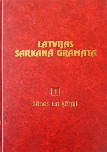

Sarkanā grāmata apkopo dažādus Latvijas dzīvniekus, kuru suga ir apdraudēta un kas ir jāsargā un jāpavairo, lai atgieztu ekosistēmas bagātību un līdzsvaru.
Galvenē un zem šī teksta ir redzamas saites, kuras uzpiežot var nonāk pie dažādu dzīvnieku aprakstiem, kas ir sarkanajā grāmatā.